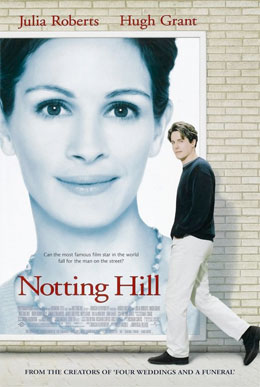

Hello Everyone!
Hi! I'm Aziza Shukurova, a sophomore student at Department of Computer
Science at Yonsei University. I'm very excited to take Internet
Programming class as I enjoy this mixture of structure and creativity.
My Hobbies
Personally, I enjoy many things, among them:
-
Reading books. I love to have an interesting book on a quiet afternoon
with a cup of iced coffee! Check out:
-
Watching Movies. Having a night out at cinema with best friends is what
you need after a long work week! Enjoy the posters of my favourite
movies:



- Building code. I'm a computer science student after all :D